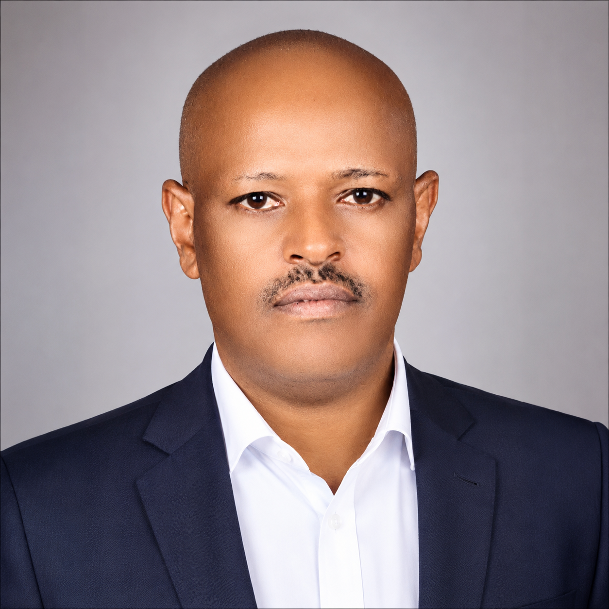

Meseret Teshome Rumicha (PhD)
Assistant Professor of Teaching English as a Foreign Language (TEFL) at Adama Science and Technology University, Ethiopia. My work focuses on English language teaching, academic writing, task-based writing, online learning, curriculum development, and student assessment in higher education.

About Me
I am an English-language educator and researcher affiliated with the Language Unit of the College of Humanities and Social Science at Adama Science and Technology University (ASTU), Ethiopia.
My academic work brings together English language teaching, academic and technical writing, task-based writing, curriculum development, online learning, and assessment in higher education. I am particularly interested in connecting sound writing pedagogy with the practical communication demands of university study and professional life.
My current scholarly and educational work includes the development of practical writing resources, research on task-based writing in Ethiopian EFL contexts, and technology-supported teaching and learning.
Education
- PhD in Teaching English as a Foreign Language (TEFL) — Addis Ababa University
- MA in Teaching English as a Foreign Language (TEFL) — Addis Ababa University
- BA in English — Kotebe College of Teacher Education
Research
My research interests and projects centre on language education, writing, pedagogy, and higher education.
Academic & Technical Writing
Academic literacy, research writing, report writing, paragraph and essay development, and communication for science and technology contexts.
Task-Based Writing
Instructor beliefs and classroom practices, learner experiences, awareness raising, task implementation, and writing development in EFL contexts.
Online Learning
Online course design, digital learning materials, Open edX course development, and technology-supported language teaching.
Curriculum Development
Course design, curriculum improvement, learning outcomes, instructional materials, and higher-education language programmes.
Assessment
Student assessment, classroom assessment practices, evaluation of writing, and assessment-informed teaching.
Higher Education
English language education, academic communication, professional development, and teaching and learning in university contexts.
Publications & Scholarly Work
A curated list of scholarly outputs will be expanded as publications and DOIs are finalized.
Bridging the Gap Between Instructors’ Beliefs and Classroom Practices in Task-Based Writing: An Ethiopian EFL Context
Instructor-focused research examining beliefs/perceptions and classroom practices related to task-based writing.
From Unfamiliarity to Engagement: Students’ Perceptions and Practices of Task-Based Writing in an Ethiopian University
Research derived from the doctoral study, focusing on learner perceptions, practices, and awareness-raising in task-based writing.
Substance Abuse and its Impact on Undergraduate Student's Academic performance: Adama Science and Technology University students in Focus
International Journal of Scientific Research in Computer Science, Engineering and Information Technology (IJSRCSEIT), Volume 2, Issue 3. ISSN: 2456-3307.
Completed Publication Published scholarly work.
Mitigating Community Noise in Adama Town, Ethiopia: Evidence-Based Priorities for Monitoring, Regulation, and Urban Planning
Ongoing research manuscript presenting evidence-based priorities for community-noise monitoring, regulation, mitigation, and urban planning in Adama Town.
In Progress Manuscript under development.
Environmental Noise Levels and Spatial Patterns in Adama Town, Ethiopia
Community-based environmental research examining noise levels, spatial patterns, land-use settings, and implications for monitoring and planning.
Books & Academic Writing Projects
Current book-development work combines practical writing pedagogy with university teaching experience.
Basic Writing Skills
A Practical Handbook for University Students in Science and Technology
A progressive handbook covering sentence construction, connecting ideas, common sentence errors, paragraph writing, and essay writing.
Research and Report Writing
A developing book project on research problems, literature review, research methods, research reporting, and academic communication.
Course & Teaching Materials
Practical resources developed for university writing instruction, including course materials, presentations, exercises, assessments, and digital learning resources.
Teaching
My teaching supports university learners in developing the language and communication skills needed for academic study and professional work.
Basic Writing Skills
Sentence, paragraph, and essay writing, with emphasis on clarity, precision, accuracy, organization, and academic communication.
Technical & Research Writing
Research and report writing, technical communication, academic organization, and scholarly presentation.
Online Teaching & Course Development
Digital course design and development using structured online learning materials and Open edX.
Academic Resources
This section provides access to selected teaching, writing, research, and scholarly resources. Additional resources can be added over time.
Writing Resources
Guides and practical materials for sentence, paragraph, essay, research, and report writing.
Basic Writing Skills Handbook
A practical handbook designed to help university students develop essential skills in sentence construction, paragraph writing, essay writing, grammar, punctuation, and revision.
Teaching Materials
Course presentations, exercises, assessments, and digital learning materials will be organized here.
Research Data
Selected research datasets are openly available through Mendeley Data for transparency, verification, and reuse.
Task-Based Writing Dataset →
Instructors Questionnaire and Interview Data on Task-Based Writing in an Ethiopian EFL Context · DOI: 10.17632/kxwc94gj9p.1
Adama Environmental Noise Dataset →
Environmental Noise Survey Dataset from Adama Town, Ethiopia · Mendeley Data
Research Data & Reproducibility
My Mendeley records provide openly accessible supporting datasets for task-based writing research and the Adama environmental noise study.
Open & Online Learning
Resources related to online course design, digital learning, and Open edX development.
Academic Profile & CV
Professional background, qualifications, research interests, and academic activities.
Academic Profile & Professional Development
Professional Focus
- English language teaching and academic communication
- Academic, technical, and research writing
- Task-based writing and writing pedagogy
- Curriculum development in higher education
- Student assessment and evaluation
- Online teaching and digital course development
Professional Development & Training
Selected professional-development activities documented in my academic CV.
- e-SHE OEX101: How to Build in Open edX Studio
- Master Class — October 2025: Foundations for Excellence in Teaching Online
- ASTU — 2023: Curriculum Development in Higher Education
- ASTU: Student Assessment and Evaluation Methods
Scholarly Profiles
Connect with my institutional and scholarly profiles and research outputs.
ORCID
ORCID profile link can be added when the public ORCID URL is available.
Google Scholar
Google Scholar profile link can be added when the public profile URL is available.
ResearchGate
ResearchGate profile link can be added when the public profile URL is available.
Contact
For academic correspondence, research collaboration, publications, teaching resources, and professional matters.
Meseret Teshome Rumicha (PhD)
Assistant Professor • Teaching English as a Foreign Language
Language Unit, College of Humanities and Social Science
Adama Science and Technology University (ASTU), Ethiopia
Email: meseret.teshome@astu.edu.et